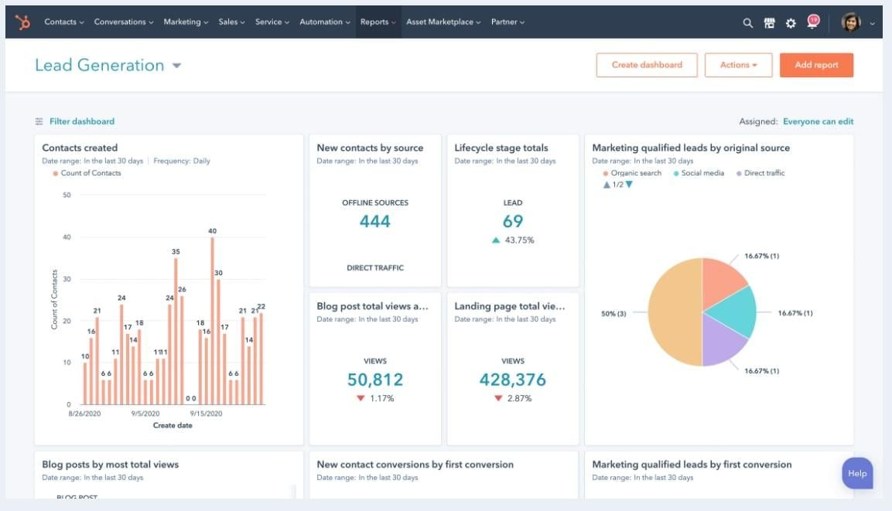
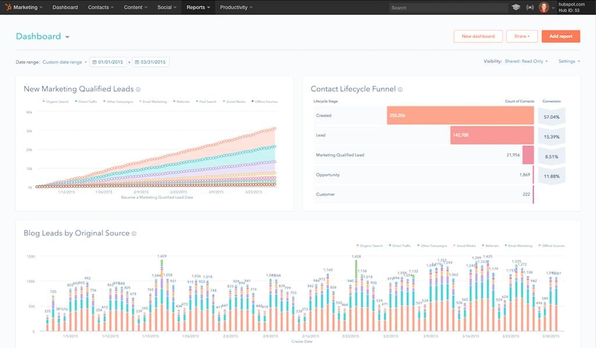
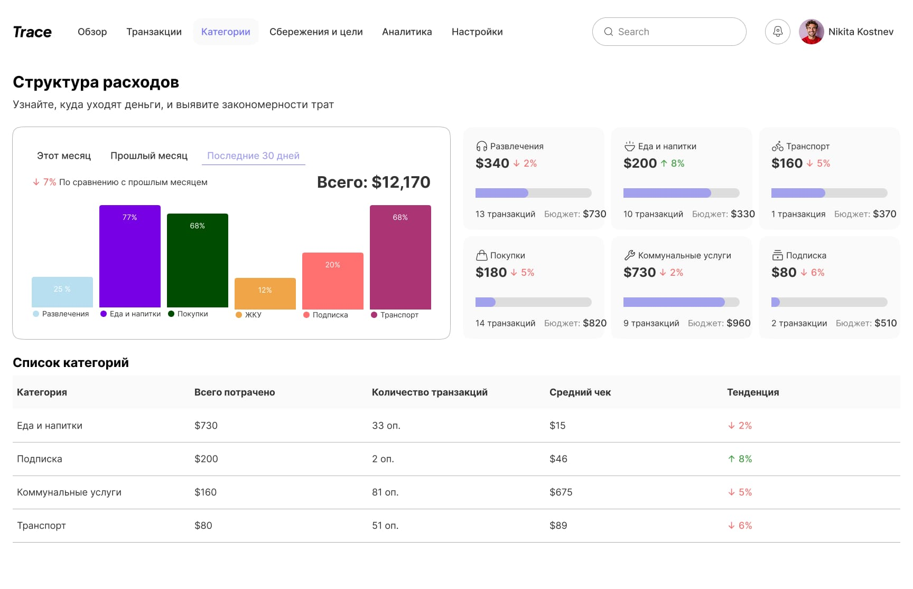
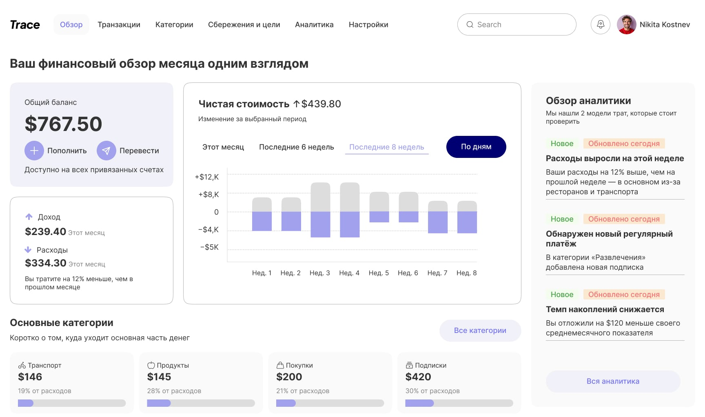
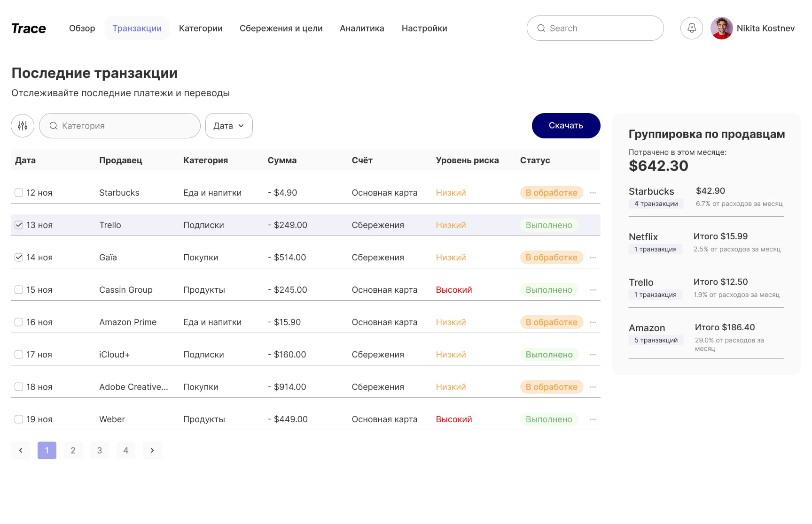
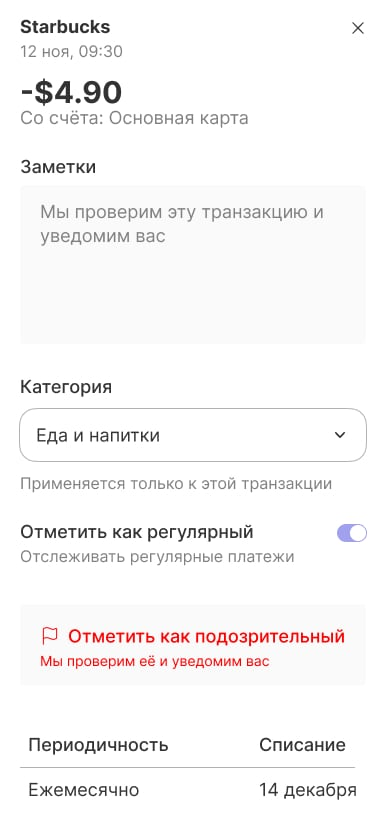
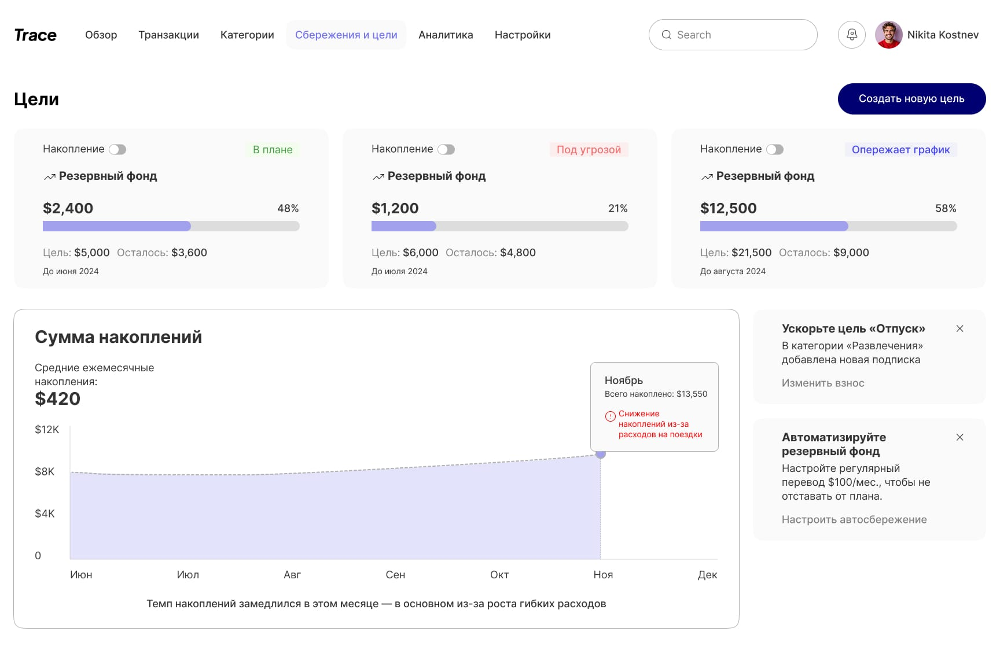
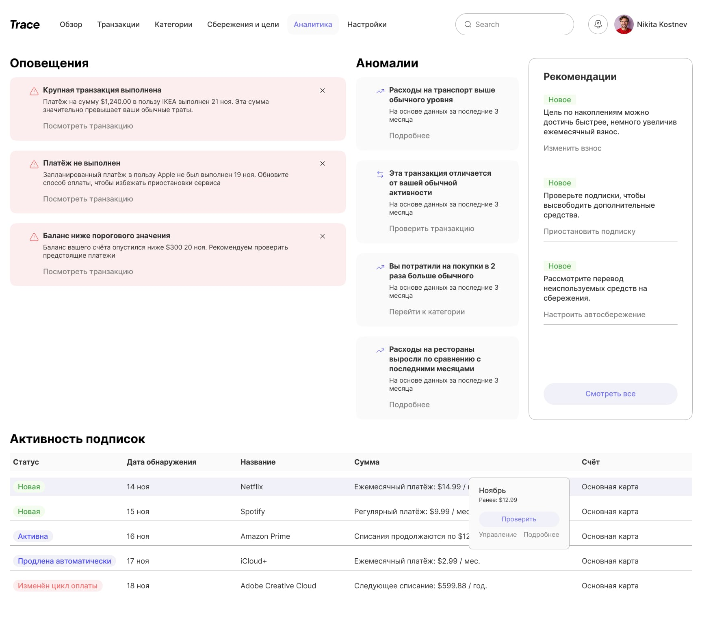

О проекте
Личные финансы становятся всё более сложными.
Пользователи ежедневно совершают десятки финансовых операций, используют разные банковские продукты и сталкиваются с большим количеством данных, которые трудно интерпретировать.
Большинство финансовых приложений показывают цифры, но редко помогают понять их значение.
Проект исследует, как аналитика и визуализация данных могут помочь пользователям лучше понимать собственное финансовое поведение.
Возник вопрос:
Как превратить финансовые данные в инструмент принятия решений, а не просто набор цифр и графиков?
Дизайн-решение
Финансовые приложения часто предоставляют пользователям огромное количество информации, но не помогают извлекать из неё практическую пользу.


Цель проекта
Разработать концепцию инструмента, который позволяет:
- отслеживать доходы и расходы;
- анализировать финансовые привычки;
- контролировать денежные потоки;
- выявлять закономерности в расходах;
- принимать решения на основе данных.
Основные направления работы
UX
Проектирование сценариев анализа финансовой информации и ежедневного взаимодействия с данными.
Product Design
Создание структуры продукта вокруг ключевых финансовых метрик и пользовательских целей.
Dashboard Design
Проектирование аналитических панелей с фокусом на ясность и скорость восприятия информации.
Data Visualization
Разработка системы визуализации для упрощения восприятия сложных финансовых данных.
Исследование финансового поведения

Одной из ключевых задач стало понимание того, какие данные действительно помогают пользователям принимать решения.
Фокус был сделан на:
- регулярных расходах;
- структуре бюджета;
- категориях затрат;
- финансовой динамике во времени.
Dashboard Experience
Главная панель объединяет наиболее важные финансовые показатели в единую систему обзора.
Пользователь получает быстрый доступ к:
- текущему балансу;
- структуре расходов;
- категориям затрат;
- динамике изменений.
Главная задача — обеспечить понимание финансовой картины за несколько секунд.

Spending Analytics
Аналитический раздел помогает выявлять закономерности и тенденции в финансовом поведении.
Через визуализацию данных пользователь может:
- находить основные статьи расходов;
- анализировать изменения во времени;
- отслеживать отклонения от бюджета;
- выявлять возможности для оптимизации расходов.


В проекте особое внимание уделялось визуальному представлению информации.
Все графики и диаграммы были спроектированы таким образом, чтобы минимизировать когнитивную нагрузку и помочь пользователю быстрее находить полезные инсайты.
User Experience
Каждое решение направлено на снижение сложности взаимодействия с финансовыми данными.
Вместо перегруженных таблиц используются:
- крупные ключевые показатели;
- понятная визуальная иерархия;
- последовательные пользовательские сценарии;
- акцент на действиях, а не на отчётности.

Clarity
Сложные финансовые показатели должны восприниматься быстро и без дополнительных объяснений.
Insights Over Numbers
Важно показывать не только данные, но и их значение для пользователя.
Focus
Каждый экран решает конкретную задачу и не перегружен второстепенной информацией.
Consistency
Визуальная система обеспечивает единый подход ко всем типам данных и аналитики.

Результат
Ключевой вопрос проекта — как превратить финансовые данные в инструмент принятия решений, а не просто набор цифр. Ответ — в структуре: каждый экран строится вокруг одной конкретной закономерности — структура расходов, динамика во времени, отклонения от бюджета — а не вокруг исчерпывающего списка транзакций.
Приоритет отдан крупным ключевым показателям и понятной иерархии вместо перегруженных таблиц.
Как и Weld, это самостоятельная практика без реальных пользователей — кейс демонстрирует работу с data visualization и dashboard design, а не измеренный эффект.